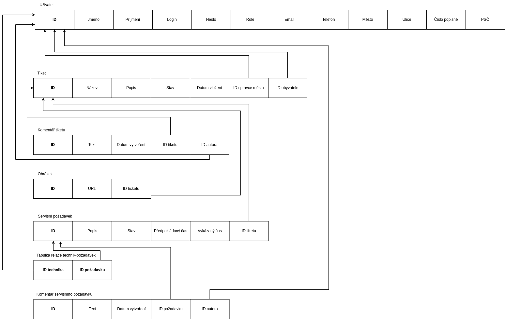

Uveďte prosím existující zástupce všech rolí uživatelů.
| Login | Heslo | Role |
|---|---|---|
| admin | admin | Administrátor |
| spravce | spravce | Správce |
| technik | technik | Technik |
| obyvatel | obyvatel | Obyvatel |
IS implementuje role a případy užití definované zadáním.
https://youtu.be/5HYea20Skgg
Aplikace se skláda z 3 základních částí - databáze, back-end, front-end. Databáze je implementována pomocí SŘBD PostgreSQL a je přepojená s back-endem pomocí knihovny SQLAlchemy. Na implementaci back-endu používáme framework Django a pro front-end jsme zvolili webový framework React.
V části api/ se v souboru models.py nachází definované modely. Soubor views.py obsahuje API endpointy pro komunikaci s frontendem pomocí GET a POST requestů, na zabezpečení klasických CRUD operací s databázovými objekty.

Je řešena za pomocí Json Web Tokenů (JWT), tokeny jsou dva, přístupový a obnovovací, které mají svou dobu expirace (5 minut a 90 dní). Tokeny jsou ukládány do místního úložiště ve webovém prohlížeči. Uchováváme si v něm navíc kromě uživatelského jména a hesla také uživatelskou roli, která nám usnadňuje práci a minimalizuje přístup do DB. Pomocí přístupového tokenu, který dostaneme importováním AuthContextu, taktéž realizujeme volání metod na API.
Autorizace je řešena za pomocí privátních cest, tzv. „Private Routes“, kterými „obalujeme“ jednotlivé stránky a určujeme, kdo k nim má přístup (na základě role, přihlášený, nepřihlášený).
Jak bylo zmíněno, je implementován za pomocí knihovny ReactJS společně s HTML+CSS. Je členěn ve složce /frontend/Pages na stránky, které jsou volány z App.js, tam je taktéž řešená autorizace. Tzv. domovským bodem pro každého uživatele, nehledě na roli, je HomePage odkud se může odkazovat na další stránky. Některé stránky implementují /frontend/Compoments také komponenty. Autentizační proces se nacházi v AuthContext.js
Python 3+, Django 2+
Zde popište, které body zadání nejsou implementovány a z jakého důvodu. Např. „Z časových důvodů nebyla implementována správa uživatelů.” Pomůžete tím zrychlit hodnocení, když neimplementované funkce nebudeme muset dlouze hledat.